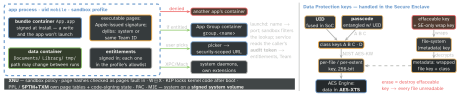
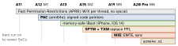

os · folio
In one line: Every third-party app runs as user mobile, sandboxed in its own container;
anything more is an entitlement — a key–value pair signed into the app and allowed
by its profile. Only Apple-signed code runs, libraries must share the app’s Team
ID, writable+executable memory is Apple-only. Other processes are reached over
Mach/XPC; data at rest is encrypted under keys tied to the device UID and the
passcode; the silicon adds PAC, page-table monitors, memory tagging.
Download PDF Print view LaTeX source


Sandbox and containers
- Home directory randomly assigned at install; the OS partition is read-only. Data lives apart from the bundle — ask
FileManager, never build paths. - The container path can change whenever the app is not running (Apple DTS): persist relative paths or bookmarks, never absolute ones.
Documents/andLibrary/are backed up,Library/Caches/andtmp/are not; Caches may be purged when storage is low.- Background work only through system-provided APIs.
Ways out — always brokered
| user’s file | document picker → security-scoped URL; wrap use in
start…/stopAccessingSecurityScopedResource(); a folder grants its whole subtree;
keep a minimal bookmark; revocable in Settings › Privacy › Files and Folders |
| own apps | App Group group.<name>: shared container (deleted with the group’s last
app), prefs, keychain items; IPC by name — Mach/XPC <group>.<name>, POSIX sem/shm,
UNIX socket inside the container |
| secrets | keychain access group (same Team ID); a registered App Group doubles as one |
| LAN, devices | Local Network alert on first use; multicast needs an entitlement; AccessorySetupKit: one picker grants Bluetooth / Wi-Fi / LAN |
| helper code | extension: own process + container, the containing app’s privacy grants; keyboards: no network until Open Access, never in secure fields |
Entitlements — signed claims, allowed by the profile
| key | grants | iOS |
|---|---|---|
application-identifier | App ID = Team ID prefix + bundle ID | — |
keychain-access-groups | shared keychain items | 3 |
…security.application-groups | group container, IPC names | 3 |
…default-data-protection | app-wide default file class | 3 |
…associated-domains | universal links, webcredentials, App Clips | 9 |
…networking.multicast | multicast + broadcast (managed) | 14 |
…web-browser-engine.host | non-WebKit engine (EU, Japan) | 17.4 |
get-task-allow | debugger may attach (dev signing only) | — |
Being signed they can’t change; daemons use them instead of root. The profile (who signs · which App ID · which devices · until when · which entitlements) is an allowlist — a claimed entitlement outside it and the app won’t run. App Store builds are re-signed by Apple and carry no profile.
Code integrity
- Library validation at launch: a platform library or the same Team ID (10 chars). System binaries have no Team ID → system libraries only.
- W⊕X: a writable+executable page needs the Apple-only dynamic code-signing entitlement — and then only one
mmap, at a random address: Safari’s JavaScript JIT. - BrowserEngineKit: non-WebKit engines split into network, rendering and content extensions; content extensions may JIT, toggling pages W→X. EU and Japan only (Japan also requires
checked-allocations). - Everyone else interprets. App Review 2.5.2: no downloaded code that changes features; 4.7 carves out HTML5/JS mini apps, games, plug-ins; 2.5.6: browse with WebKit.
Device modes that change what an app sees
- Lockdown Mode: complex web tech blocked — in
WKWebViewtoo (isLockdownModeEnabled, overridable per view); most Messages attachments blocked; no new profiles or MDM enrolment; 2G/3G off; accessories need an unlocked device. - Stolen Device Protection: away from familiar places, saved passwords and cards need Face/Touch ID with no passcode fallback; Apple Account changes wait an hour.
- Automatic Restart: a long-locked device reboots, After → Before First Unlock — class C data is locked again.
- Background Security Improvements: WebKit and system-library fixes between updates, active after a restart, removable (shipped as patch + antipatch).
IPC — Mach ports and XPC
- Port = kernel message queue: one receiver, many senders. Rights: send · receive · send-once · port set · dead name — carried inside messages. XPC = typed messages over Mach (
NSXPCConnection,XPCSession). - Authorise the peer by its audit token — kernel-stamped: auid, euid, egid, ruid, rgid, pid, asid, pidversion — never a bare PID, which is recycled.
- Your task control port’s send right = full control of your process; Enhanced Security turns moving it (
ILLEGAL_MOVE), raw reply-port misuse andthread_set_stateintoEXC_GUARDcrashes. - An app can declare its own extension point (
AppExtensionPoint), launch the extension (AppExtensionProcess) and talk to it overXPCSession— e.g. an Enhanced Security helper: no UI, tighter sandbox, parses untrusted data.
Data Protection — what the picture means
- New file → new 256-bit key: AES-256-XTS on A14–A18 and M1+, AES-128-XTS on A9–A13. The SE unwraps it and re-wraps it for the AES Engine with a per-boot key — the application processor never sees a file key.
- Change a file’s class → rewrap its file key; change the passcode → rewrap the class keys. Class B wraps with Curve25519 ECDH, so locked devices can still create files.
- UID: random, fused at manufacture; A9+ made by the SE’s TRNG — unknown to Apple. Passcode tangled with it: guessing runs on this device, ≈80 ms a try (>5.5 years for 6 chars a–z 0–9), delays 1 min → 8 h enforced by the SE across reboots; Erase Data after 10 failures.
Silicon mitigation ladder

PAC: 5 secret 128-bit keys; return addresses: per-process key + stack-pointer salt; function pointers: one key for all processes. SPTM sits above the kernel, TXM enforces code-execution policy: page tables hold even against kernel write. MIE (iPhone 17, Air): typed allocators (kalloc_type, xzone malloc) + synchronous tags, always on for the kernel and 70+ system processes.
Enhanced Security — an opt-in capability
Entitlements com.apple.security.hardened-process plus .enhanced-security-version-string (≥ 2 → freed memory becomes guard regions) · .checked-allocations (tagging, A19 / M5+; .soft-mode = simulated crash) · .platform-restrictions-string (checks on loaded dylibs, incoming Mach messages) · .dyld-ro (loader state read-only) · ….enforce-checked-pointer-arithmetic-overflow (arm64e.x1). Build settings: arm64e, typed allocators, stack zero-init, libc++ hardening; optional -fbounds-safety. Apple DTS, Feb 2026: third-party tagging ran in soft mode anyway(unverified).
Traps
- Shipping with tagging
.soft-modestill on — tag faults only log. - arm64e: a C++ virtual call through a mismatched declaration, or
dispatch_queue_t/xpc_connection_tpassed between C++ and Objective-C++, now crashes. - Simulator can’t test PAC; tagging acts only on A19 / M5 hardware.
Remember
Sandbox = where, entitlement = what, signature = which code, Data Protection = when, silicon = even if the kernel falls.